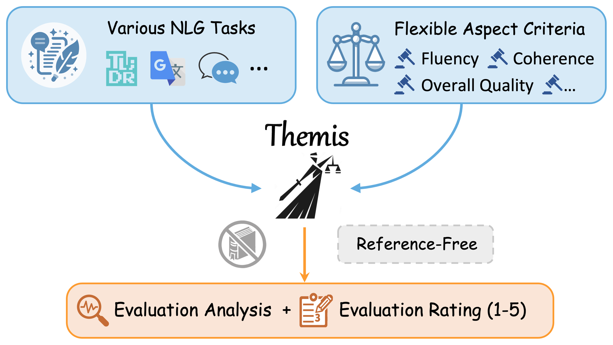

EMNLP 2024LLM evaluation · Preference learning
Themis: A Reference-free NLG Evaluation Language Model with Flexibility and Interpretability
An evaluator should explain its scores and accept the criteria a task needs. Themis trains an open model to provide both, without requiring a reference answer.
- Result
- Average Spearman correlation with human ratings on six held-out NLG benchmarks: Themis-8B 0.542 vs 0.521 for prompted GPT-4 and 0.319 for TIGERScore-13B.
- New vs prior
- G-Eval prompts proprietary GPT models; Prometheus needs references, and Auto-J and TIGERScore lack customizable criteria. This work trains an open 8B evaluator that is reference-free, takes custom criteria, and explains ratings.
- Limitation
- Prompted GPT-4 still leads on dialogue-response (Topical-Chat) and translation (WMT23) evaluation, which the paper attributes to GPT-4's stronger dialogue and multilingual abilities.

The evaluator should follow the rubric, not just recognize good prose
A summary can be smooth and concise yet attribute an action to the wrong person, so its fluency and factual-consistency ratings should differ. An evaluator that accepts flexible criteria must track which aspect it was asked to judge, rather than let a general impression set every score, and it should explain its rating in terms of that aspect.
Themis also works without a reference answer: it receives the task context, the candidate output, and the evaluation criteria. The hard part is training data, namely judgments whose rating and analysis both follow from those inputs, rather than a large number of plausible critiques.
Closest prior work
Prompting approaches such as G-Eval ask proprietary LLMs such as GPT-4 to score, compare, or rank outputs; the paper notes that they are costly and can be irreproducible. Fine-tuned evaluators such as Prometheus, Auto-J, TIGERScore, and InstructScore train open models on human or GPT-4 judgments, but each either needs references or lacks customizable criteria (Table 1). Themis provides both properties with explanations, and adds consistency-based data selection and rating-guided preference alignment.
Selected data beats more data, and rating-guided DPO adds to it
0.542
Average Spearman ρ, six benchmarks
Themis-8B versus 0.521 for prompted GPT-4 and 0.319 for TIGERScore-13B, the strongest fine-tuned evaluator with a full average (Table 2).
0.476
Same-size raw data instead
With about 67K randomly sampled raw examples, the size of the selected fine-tuning set, average Spearman falls to 0.476; even all raw data reaches only 0.493 (Table 3).
Measured · Tables 2, 4 and 21–26
Where does GPT-4 still beat Themis?
Table 2 reports one or two correlations per held-out benchmark; the appendix (Tables 21–26) breaks each benchmark into aspects or subsets, and Table 4 covers two unseen tasks. Pick a benchmark, a column and a correlation coefficient: the bars show every evaluator the paper prints for that column, and the grid shows Themis-8B minus GPT-4 for every column at once.
A measure is available only where the paper prints it. Select a cell in the difference grid to open that column.
Themis-8B minus GPT-4, every printed column · Spearman ρ
SummEval
- Benchmark level+0.042
- Coherence+0.026
- Consistency+0.069
- Fluency+0.091
- Relevance−0.017
Topical-Chat
- Benchmark level−0.021
- Context maintenance−0.036
- Interestingness−0.013
- Knowledge use−0.025
- Naturalness−0.010
SFHOT & SFRES
- Benchmark level+0.013
- SFHOT informativeness−0.043
- SFHOT naturalness+0.021
- SFRES informativeness+0.085
- SFRES naturalness−0.010
QAGS
- Benchmark level+0.047
- CNN-DM+0.015
- XSUM+0.079
MANS
- Benchmark level+0.078
- ROC+0.029
- WP+0.127
WMT23 zh-en
- Benchmark level−0.032
Six-benchmark average
- Benchmark level+0.021
Unseen tasks
- Average over aspects+0.103
- Clarity (CLA)+0.157
- Completeness (COM)−0.272
- Correctness (COR)+0.112
- Politeness (POL)+0.011
- Relevance (REL)+0.045
- Example usage (EU)+0.068
- Factual accuracy (FA)+0.107
- Logical coherence (LC)+0.463
- Overall usefulness (OU)+0.369
- Simple language (SL)−0.027
Computed differences of printed values; warm cells are columns where GPT-4 is higher. 11 of 34 columns.
SummEval · Benchmark level · Spearman ρ
Measured · Table 2 correlation with human ratings, as printed. † reference-based in Table 2; comet22, AUTOCALIBRATE, CoAScore and HD-EVAL-NN appear only in the appendix tables, which do not mark reference use.
Table 21 prints GPT-3.5’s SummEval average ρ as 0.415; Table 2 prints 0.416, shown here.
SummEval · Benchmark level · Spearman ρ (Table 2). Themis-8B 0.553 vs GPT-4 0.511: Themis-8B leads by 0.042. No printed evaluator scores above Themis here. Under Spearman ρ, GPT-4 is higher than Themis in 11 of the 34 columns where both are printed.
Measured: every correlation, copied as printed from Table 2 (benchmark level), Table 3 (six-benchmark τ and r averages), Table 4 (unseen tasks) and Tables 21–26 (aspects and subsets). Appendix-only evaluators (comet22, AUTOCALIBRATE, CoAScore, HD-EVAL-NN) appear only where those tables list them. GPT-4 is the prompted GPT-4 baseline implemented after Chiang and Lee (2023b); G-Eval (GPT-4) is listed separately. Computed: rankings and the Themis-minus-GPT-4 differences. Where two tables print different values for the same column, the column states which one is shown. The correlation coefficients follow each dataset’s usual setup (Section 4.2), so compare values within a column rather than across columns.Tables 2–4 and Appendix D ↗
Table 3 tests both training choices. Raw data of the same size, and even all of the raw data, falls short of the selected set, so selection rather than quantity explains the gain. Removing DPO costs more than switching to vanilla DPO, so preference alignment and its rating-guided margin both contribute.
On two evaluation tasks unseen in training, instruction following and long-form question answering, Themis averages 0.545 Spearman versus 0.442 for GPT-4, although GPT-4 remains stronger on completeness and simple language (Table 4).
Table 3 (selected rows). Average correlation between model and human ratings over the six test datasets (Spearman ρ, Kendall τ, Pearson r), higher is better; ablation rows change one component of Themis-8B (Llama-3-8B backbone). The 67K raw-data row matches the size of the selected supervised fine-tuning set. Source ↗
| Method | Avg ρ | Avg τ | Avg r |
|---|---|---|---|
| GPT-4 | 0.521 | 0.417 | 0.564 |
| TIGERScore-13B | 0.319 | 0.280 | 0.333 |
| Themis-8B | 0.542 | 0.486 | 0.569 |
| Data sampling: 100% raw data | 0.493 | 0.445 | 0.515 |
| Data sampling: 50% raw data | 0.478 | 0.432 | 0.505 |
| Data sampling: 67K raw data | 0.476 | 0.428 | 0.507 |
| Preference alignment: vanilla DPO | 0.528 | 0.474 | 0.556 |
| Preference alignment: without DPO | 0.508 | 0.456 | 0.534 |
Method proposed in the paper
Scope. Training labels combine human ratings with GPT-4 analyses and ratings, so GPT-4's judgments partly shape Themis's. Backbones were limited to 7B–13B models; stronger foundations such as Llama-3-70B were not tried. Read the study ↗
Read the abstract
The evaluation of natural language generation (NLG) tasks is a significant and longstanding research area. With the recent emergence of powerful large language models (LLMs), some studies have turned to LLM-based automatic evaluation methods, which demonstrate great potential to become a new evaluation paradigm following traditional string-based and model-based metrics. However, despite the improved performance of existing methods, they still possess some deficiencies, such as dependency on references and limited evaluation flexibility. Therefore, in this paper, we meticulously construct a large-scale NLG evaluation corpus NLG-Eval with annotations from both human and GPT-4 to alleviate the lack of relevant data in this field. Furthermore, we propose Themis, an LLM dedicated to NLG evaluation, which has been trained with our designed multi-perspective consistency verification and rating-oriented preference alignment methods. Themis can conduct flexible and interpretable evaluations without references, and it exhibits superior evaluation performance on various NLG tasks, simultaneously generalizing well to unseen tasks and surpassing other evaluation models, including GPT-4.
Full paper ↗Citation BibTeX
@inproceedings{hu-etal-2024-themis,
title = "Themis: A Reference-free {NLG} Evaluation Language Model with Flexibility and Interpretability",
author = "Hu, Xinyu and Lin, Li and Gao, Mingqi and Yin, Xunjian and Wan, Xiaojun",
booktitle = "Proceedings of the 2024 Conference on Empirical Methods in Natural Language Processing",
year = "2024",
url = "https://aclanthology.org/2024.emnlp-main.891/",
pages = "15924--15951"
}